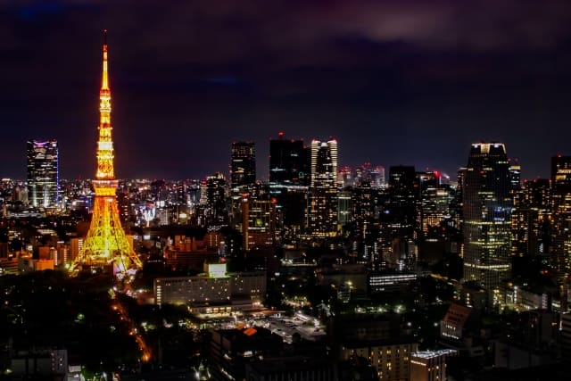
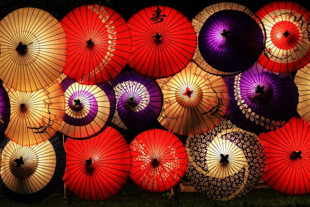
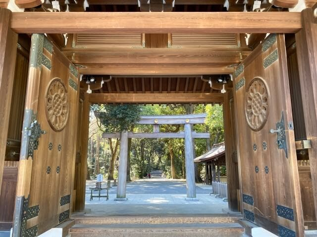
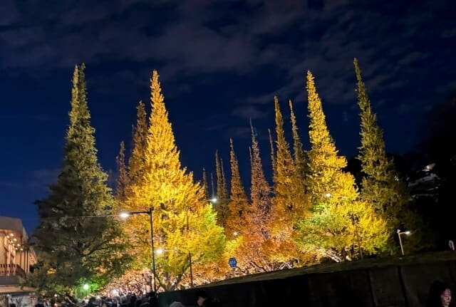
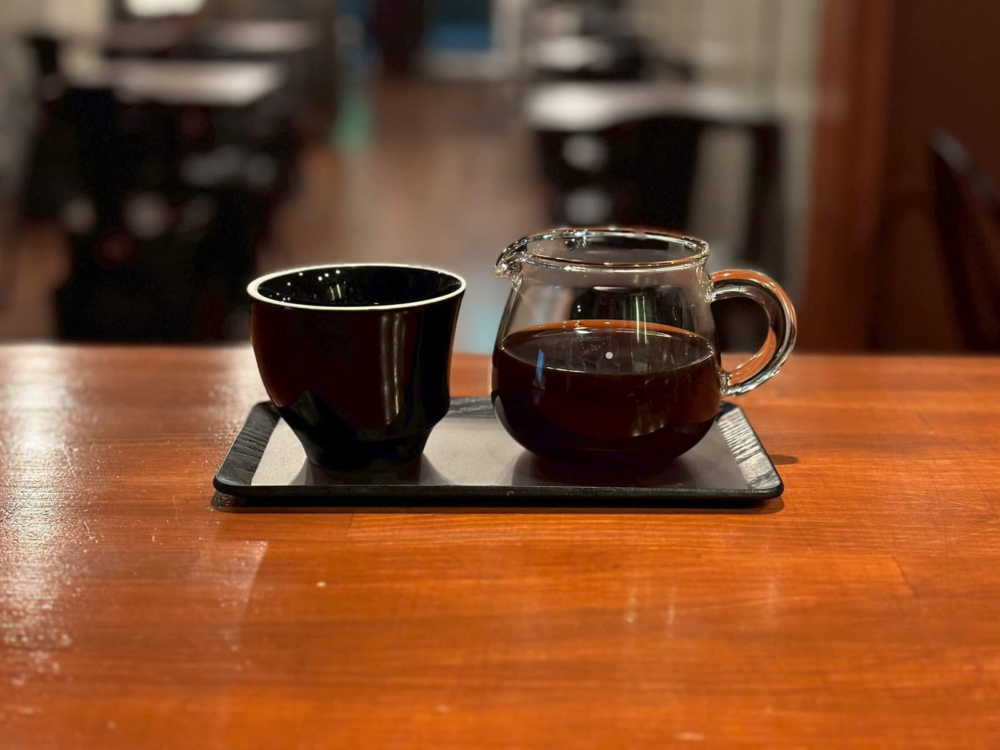

The Origin
Where Silence Meets Sensibility
Kitasando exists just beyond the noise of Shibuya and Harajuku — a quiet intersection where calm meets culture. It is not a place you stumble upon; it is a place you seek. This deliberate stillness creates the ideal condition for coffee to be experienced, not merely consumed. Kitasando is not simply a location. It is a filter — where only what is essential remains.

The City That Refines Everything
Tokyo does not imitate — it reinterprets. Every cultural element that enters this city is distilled, refined, and elevated into something distinctly its own. Coffee is no exception. Here, the craft extends beyond brewing into space, gesture, and atmosphere. Tokyo is not the endpoint of coffee culture. It is the origin of its most refined expression.
Where Coffee Finds Its Place
The area connecting Sendagaya, Kitasando, and the surrounding cultural streets — known locally as Dagayasando — is one of the most considered expressions of Tokyo's coffee culture. Unlike districts shaped by volume or visibility, this neighborhood is defined by quieter values: intention, atmosphere, and a pace that allows each experience to carry more weight.
Part of what defines this atmosphere is the presence of sacred and natural spaces held close by — Hatonomori Hachimangu Shrine, the forest of Meiji Jingu, the gardens of Shinjuku Gyoen. These are not simply landmarks. They are anchors. Their proximity shapes the character of the streets and the mood of those who choose to walk them. The area carries a stillness that is not constructed, but inherited.
People do not arrive here by chance. They come in search of something more specific — a place where the streets feel curated, the spaces intimate, and the coffee deeply considered. A true coffee destination is not made by the number of cafés alone. It takes an alignment of place, pace, and culture. That alignment is what gives this district its meaning.




The Purest Expression
Kitasando Reserve is the premium coffee label of Green Beans Coffee — a quiet, sign-free roastery tucked into the Dagayasando neighborhood of Kitasando. No signs. No fanfare. Just coffee, roasted daily.
Kitasando Reserve is a name chosen with intention — one that carries the character of its origin: the district, the roastery, the philosophy behind each bean.